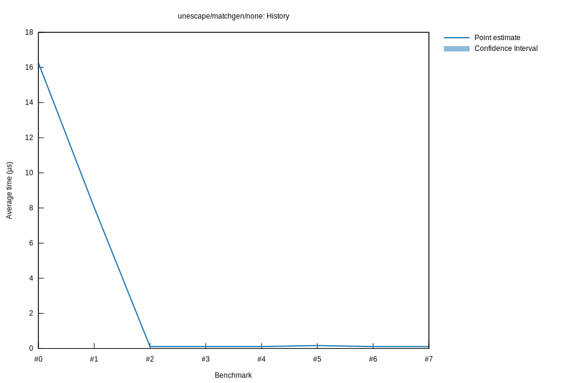

# 72025-11-02T17:50:09-08:00
|
Lower Bound |
Estimate |
Upper Bound |
| Value: |
0.16µs |
0.16µs |
0.16µs |
| Throughput: |
98640.29MiB/s |
98323.25MiB/s |
97993.67MiB/s |
| Change in Value: |
+46.511% |
+47.901% |
+49.366% |
| Change in Throughput: |
-31.746% |
-32.387% |
-33.050% |
No change in performance detected.
# 62025-10-31T17:55:51-07:00
|
Lower Bound |
Estimate |
Upper Bound |
| Value: |
0.11µs |
0.11µs |
0.11µs |
| Throughput: |
146640.62MiB/s |
146128.21MiB/s |
145594.13MiB/s |
| Change in Value: |
-35.565% |
-34.578% |
-33.822% |
| Change in Throughput: |
+55.195% |
+52.854% |
+51.108% |
No change in performance detected.
# 52025-10-31T17:49:13-07:00
|
Lower Bound |
Estimate |
Upper Bound |
| Value: |
0.17µs |
0.17µs |
0.17µs |
| Throughput: |
95953.50MiB/s |
95579.05MiB/s |
95169.58MiB/s |
| Change in Value: |
+51.510% |
+53.109% |
+55.204% |
| Change in Throughput: |
-33.998% |
-34.687% |
-35.569% |
No change in performance detected.
# 42025-10-29T22:28:03-07:00
|
Lower Bound |
Estimate |
Upper Bound |
| Value: |
0.11µs |
0.11µs |
0.11µs |
| Throughput: |
146310.40MiB/s |
145796.86MiB/s |
145248.72MiB/s |
| Change in Value: |
-1.3032% |
-0.4685% |
+0.2818% |
| Change in Throughput: |
+1.3204% |
+0.4707% |
-0.2810% |
Change within noise threshold.
# 32025-10-29T22:21:27-07:00
|
Lower Bound |
Estimate |
Upper Bound |
| Value: |
0.11µs |
0.11µs |
0.11µs |
| Throughput: |
145689.40MiB/s |
145196.57MiB/s |
144670.93MiB/s |
| Change in Value: |
-0.7028% |
+0.2996% |
+1.2249% |
| Change in Throughput: |
+0.7078% |
-0.2987% |
-1.2101% |
Change within noise threshold.
# 22025-10-29T19:45:51-07:00
|
Lower Bound |
Estimate |
Upper Bound |
| Value: |
0.11µs |
0.11µs |
0.11µs |
| Throughput: |
146152.48MiB/s |
145482.82MiB/s |
144721.90MiB/s |
| Change in Value: |
-98.634% |
-98.619% |
-98.604% |
| Change in Throughput: |
+7220.5% |
+7140.3% |
+7064.9% |
No change in performance detected.
# 12025-10-29T19:02:39-07:00
|
Lower Bound |
Estimate |
Upper Bound |
| Value: |
7.99µs |
8.03µs |
8.07µs |
| Throughput: |
2016.25MiB/s |
2006.41MiB/s |
1995.68MiB/s |
| Change in Value: |
-51.009% |
-50.539% |
-49.958% |
| Change in Throughput: |
+104.12% |
+102.18% |
+99.832% |
No change in performance detected.
# 02025-10-26T16:46:57-07:00
|
Lower Bound |
Estimate |
Upper Bound |
| Value: |
16.20µs |
16.26µs |
16.32µs |
| Throughput: |
994.35MiB/s |
990.94MiB/s |
987.39MiB/s |